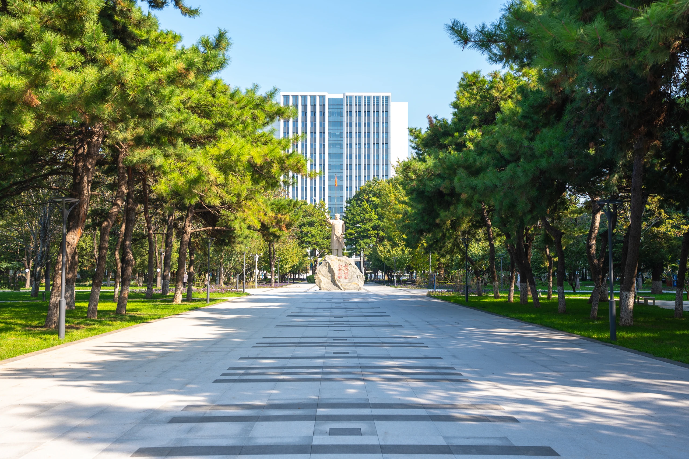
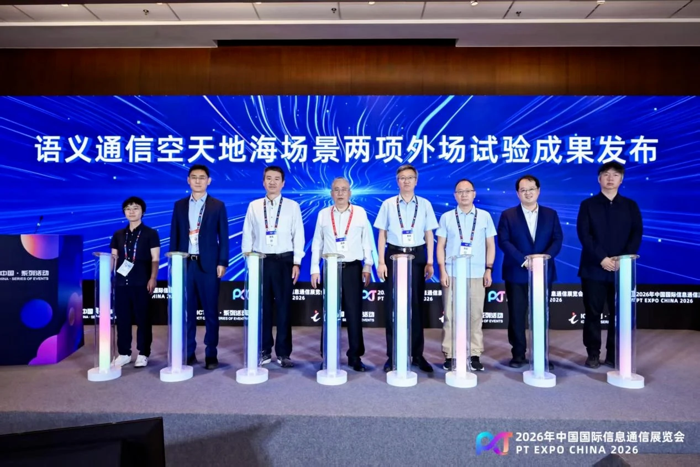
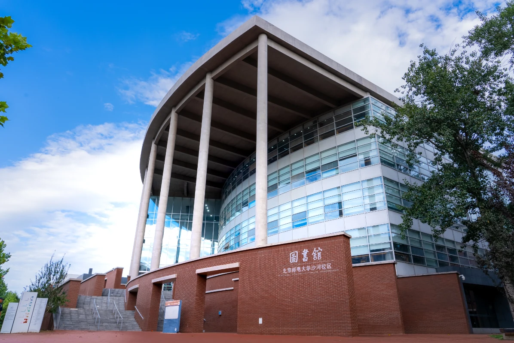
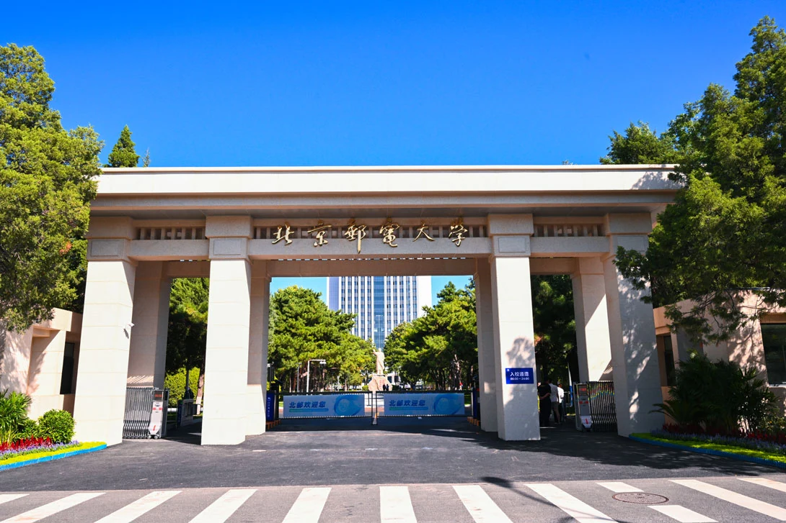
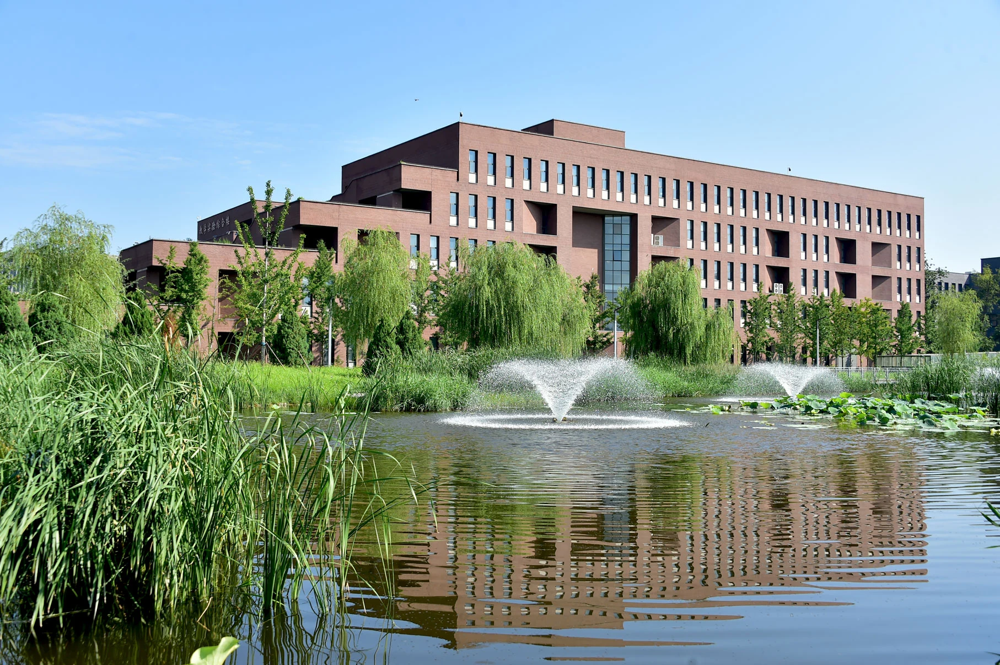
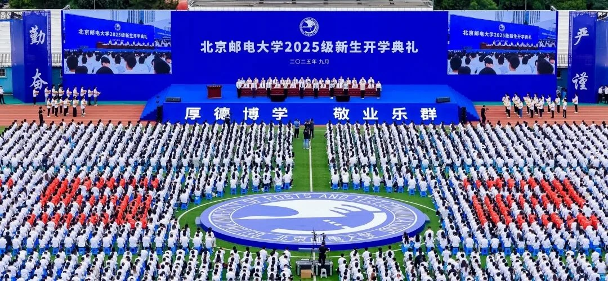
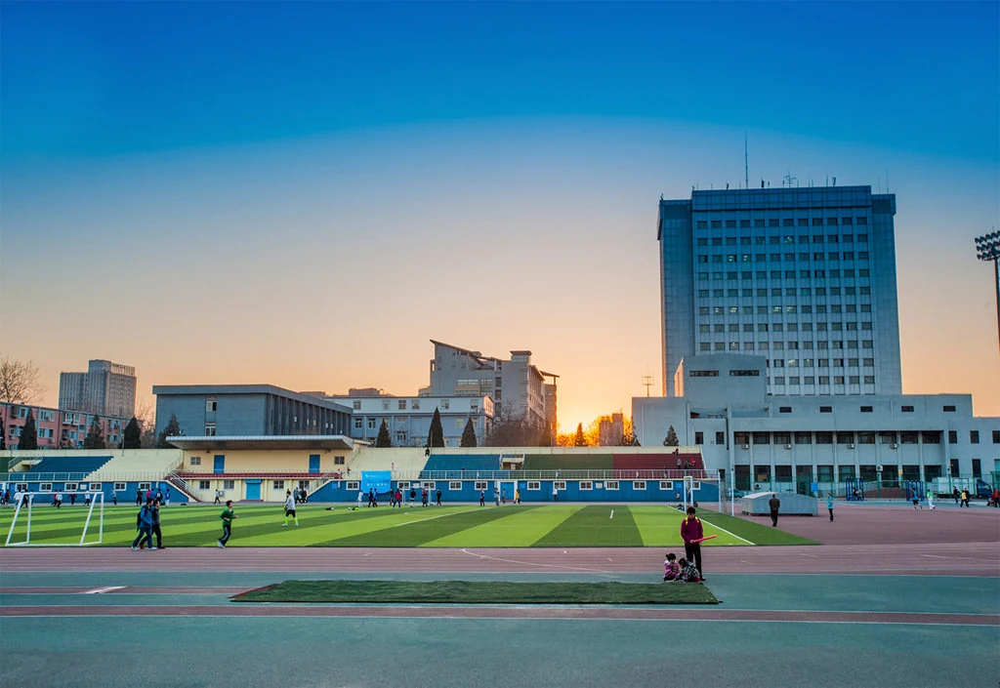
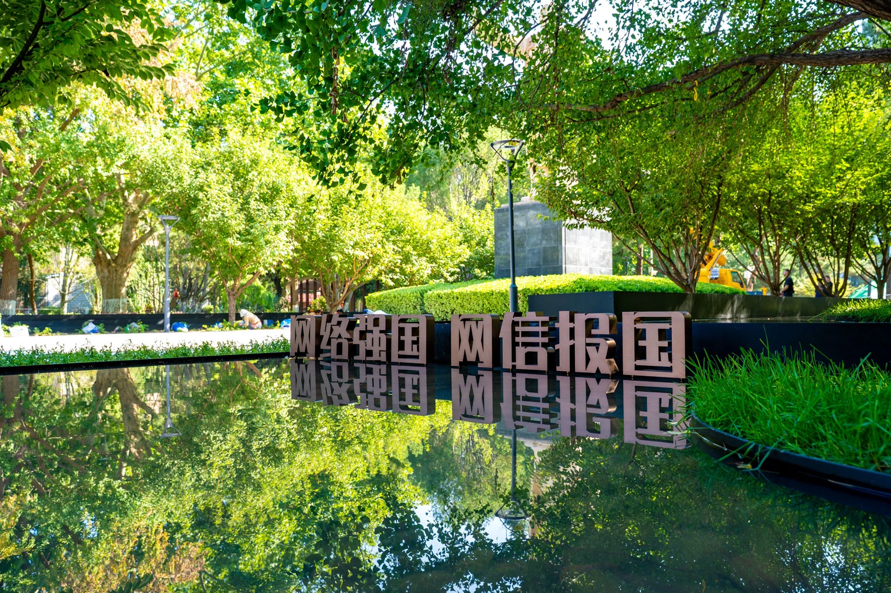
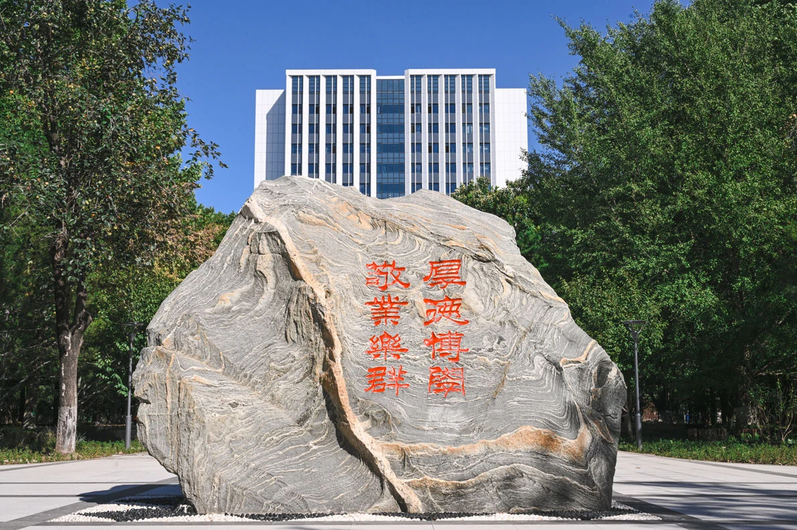

北京邮电学院成立
新中国第一所
邮电高等学府

BEIJING UNIVERSITY OF POSTS AND TELECOMMUNICATIONS
一所大学，与信息时代同频。
传邮万里
国脉所系
01 / THE UNIVERSITY
新中国第一所邮电高等学府。
以信息科技为特色、工学门类为主体，
工管文理交叉融合的研究型大学。
数据口径：学校简介，更新至 2026 年 5 月。01 / 从这里，认识北邮
02 / A CONTINUING STORY
从邮电通信的时代命题，
走向数字世界的广阔未来。
变的是技术，不变的是连接的使命。
新中国第一所
邮电高等学府
被确定为全国
64 所重点院校之一
在传承中，
展开新的发展篇章
成为首批
“211 工程”建设高校
以优势学科群，
回应信息时代
来源：学校简介、校方《历史沿革》。02 / 时间，写下答案
03 / ACADEMIC STRENGTH
以鲜明的信息科技特色，
积累理解与连接世界的底层能力。
让信息跨越距离
让计算拓展可能
让器件支撑创新
三个一级学科在教育部学科评估中获评 A 类，
其中信息与通信工程为 A+。
按校方学校简介披露的学科评估结果呈现；不作新一轮排名推断。03 / 深耕，是底气
04 / CONNECTED KNOWLEDGE
两个一流学科群，构成北邮信息科技发展的重要支点。
从信息传输到网络连接
从计算能力到可信空间
学科群名称源自学校简介；关系图为介绍性示意，非组织架构图。04 / 连接，也发生在学科之间
05 / RESEARCH IN MOTION
从传输数据，到理解信息的意义。
北邮推动语义通信走向真实场景验证。
联合中国移动，完成基于运营商 NTN
低轨卫星链路的语义视频实时通信实测。
联合天翼物联、中国电信研究院，完成基于
轻量化算力网关的海洋实时监控视频实测。

来源：北京邮电大学《发布两项语义通信外场试验成果》。成果处于试验验证与应用探索阶段。05 / 在真实世界，验证想法

昌平校区 · 图书馆06 / LEARNING BY EXPLORING
未来学院“元班”探索本硕博贯通，
培养拔尖创新人才。
卓越工程师学院与“北邮—华为学院”，
把产业需求与人才培养相连接。
创新创业教育与专业竞赛，
让知识在真实问题中生长。
07 / TWO CAMPUSES, ONE SPIRIT

走过校门，走进一段悠长的学术传统。

开阔的校园，容纳新一代求知者的想象。
校区名称及图片对应：北京邮电大学官网“校园风光”栏目。
08 / LIFE AT BUPT
向知识奔赴，也向生活敞开。

2025 级新生开学典礼 · 官方影像


图片来源：校方“校园风光”栏目、2025 级新生开学典礼报道。08 / 知识之外，是生活
09 / OPEN TO THE WORLD
国（境）外高水平大学、
一流科研机构与知名企业交流合作伙伴
PARTNERSHIP
与英国伦敦玛丽女王大学联合成立国际学院、
玛丽女王海南学院，探索中外合作办学。
EXCHANGE
“筑梦计划”学生海外学习交流项目矩阵，
拓展全球视野与跨文化理解。
CONNECTION
在开放合作中，理解不同的问题，
也发现自己可以创造的价值。
统计口径：学校简介（2026 年 5 月）；200+ 涵盖高校、科研机构与企业，不仅指高校。09 / 视野，没有围墙

10 / THE SPIRIT WE CARRY
崇尚奉献 · 追求卓越
连接知识，连接彼此，连接未来。
下一段故事，从这里开始。
11 / EXPLORE FURTHER
校情数据截至 2026 年 5 月 · 资料检索于 2026 年 10 月 3 日。摄影、校标版权归北京邮电大学或原作者所有。
本演示为基于公开资料制作的独立介绍，非校方官方宣传材料。完整图片出处见 素材清单 ↗。